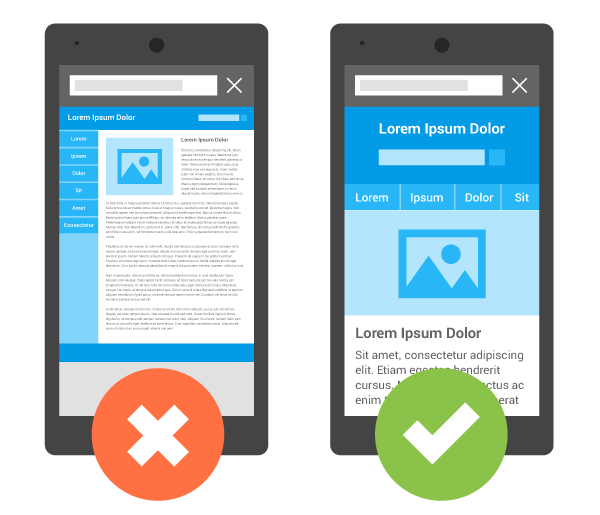

Адаптивный дизайн
Скорее всего вы замечали что на разных устройствах сайты выглядят по-разному? На экране компьютера
видно
очень много функционала страницы и различной информации, на телефоне же наоборот функционал прячут в
side-bar’ах, а размер информации увеличивают.
Создается впечатление что это 2 разных сайта, раньше так и было, однако сейчас у дизайнеров появилась
возможность делать 1 универсальный дизайн, который будет подстраиваться под любой размер экрана. Про
способы реализации подобного, и о самом дизайне мы и поговорим в данной статье.

Рисунок 1 -
Правильный
выбор
Адаптивный дизайн – дизайн веб-стриниц или других приложений предполагающий свое использование на
устройствах с разными размерами экрана, т.е. подстраивается под определенные размеры экрана
браузера.
На рисунке 1 показано как должно быть.
Есть различные подходы к созданию мобильных дизайнов, и они продолжают развиваться. Первым из них был
резиновый дизайн, тогда контент страницы растягивался и сжимался в зависимости от размера окна, для
разных десктоп мониторов данный подход был вполне применим, однако адаптировать его для маленьких
экранов смартфонов он уже не мог. Все становилось слишком маленьким и сжатым. Поэтому появились
более
профитные решения.
Адаптивный макет. Данное решение предполагает создание нескольких дизайнов проекта для
нескольких
размеров экранов и между ними происходит переключение. Однако размеры блоков сайта жестко
заданы
в
(px).
Отзывчивый макет. В подобном подходе проект делается посредством гибкой сетки, гибкими
изображениями
и медиазапросами. Это значит что размеры блоков задаются не в px, как в адаптивном макете, а
в
процентах от размера экрана. Проекту созданному на основе отзывчивого макета будет хорошо
выглядеть
как на мобильном, так и на десктоп устройстве.
Смешанный макет. В том случае если дизайнер хочет сделать максимально адаптированным к
любым
размерам экранов, он может смешивать оба подхода. В одних случаях делать размеры элементов
статичными, в других динамичными. Подобный подход применяют при создании мобильной версии
сайта
на
основе классической.
Таблица 1 - Потому что надо
|
Вопрос
|
Ответ |
| Нужен ли адаптив? |
Да |
| Точно нужен? |
Однозначно |
Очень важно уяснить что понятие «адаптивный дизайн» не то же самое что «адаптивный макет». Макет
сайта —
это просто изображение, показывающее расположение элементов сайта, а дизайн более широкое понятие,
означающее подход к работе.
Отзывчивый дизайн основывается на трех базовых вещах:
Все эти моменты реализуются посредство HTML & CSS, ибо такой код будет работать на любом устройстве,
как
на десктоп, так и на мобильном. Однако при преимуществе в кроссплатформенности мы имеем ограничения
по
функционалу. Фактически дизайнер будет разрабатывать дизайн для мобильного устройства, который будет
адаптироваться под размер экрана.
Существует также подход в разработке адаптивного дизайна так называемый mobile first. Суть его
заключается в том что разработка начинается с создания мобильного, самого простого сайта, который
постепенно усложняется. К вышеупомянутым HTML & CSS подключается JS.
Выглядеть подобное будет так: адаптивный сайт на смартфоне будет иметь базовые возможности, однако
большая часть функционала будет скрыта. Зависимость такая, чем больше экран, тем больше функционала
доступно сразу, и даже больше.
Есть несколько причин почему мы рекомендуем вам использовать адаптивный дизайн:
Удобвство распространения.
Лучше создать 1 универсальную страницу, нежели создать несколько вариантов
содержимого
Не нужна переадресация, скорость загрузки сайта всегда хорошо
Выше оценивается роботами гугла
Еще в очень недалеком прошлом пожалуй можно было думать. Однако сегодня объемы трафика с мобильных
устройств с каждым днём только увеличивается, из этого всего выходит что делать сайты только под
десктоп
просто неразумно.
1 Википедия [Электронный ресурс]. -Режим доступа: https://ru.wikipedia.org/wiki/....
-Дата доступа: 16.04.2019.
2 Demis group [Электронный ресурс]. -Режим доступа: www.demis.ru
-Дата доступа: 16.04.2019.
3 Google поиск [Электронный ресурс]. -Режим доступа: www.demis.ru
-Дата доступа: 16.04.2019.